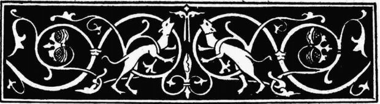

Son Koad ar Jaou
Les frères Euret
Texte recueilli par Théodore de La Villemarqué
Pages 111 - 112 du 2ème carnet de Keransquer.
Mélodie
"Mibien Eured", recueilli par Duhamel, "Musiques Bretonnes, p.83, N°165
Chanté par Menguy et Léon
| Une version de ce chant avait déjà été notée par La Villemarqué dans son 1er carnet de collecte. On trouvera toutes les informations concernant ce chant sous Paotred An Eured. | A version of this song was already recorded by La Villemarqué in his first collection book. You will find all relevant information on the present song on page Paotred An Eured. |
Arrangement Christian Souchon (c) 2014
Source: site de Pierre Quentel

| Brezhoneg | Français | English |
|---|---|---|
|
P. 111 Son Koad ar Jaou 1. Selaouit holl, O selaouit, (div w.) Ur zonig nevez zo savet! (div w.) 2.Ur zonig nevez, hep lared gaoù War paotred an Euret o daou. 3. Ma breur Markus deomp-ni hon daou D'an nozvezh vras da Goad-ar-Jaou; 4. Pa oant en hent o partiañ Me gleve ar c'hleier o vrallañ 5. Me gleve ar c'hleier o vrallañ, Taran ha gurun an euzhussañ! 6. - Ma breur Roparz, chomit er ger, Rak ur gwall nozvezh a zigor. 7. - Bout deuet an eur, monet a rin, Na fenoz drouk da zen na rin. 8. Pa oant erru e Koad-ar-Jaou, E oa serret an norejoù. 8bis. E oa serret an norejoù. Hag an dud 'n o gweliaoù 9. - Porzher, digorit an nor din, M'am-bo un tamm tan da fumiñ 13. N'oa ket e c'her peurlavaret An nor en ti en-doa taolet, P. 112 14. Ar porzher (partier) kozh en-deus lazhet, Map ar porzher en-deus mouget (tranket). 14bis. 'Dalek an oaled beteg an treuzoù A oa ar gwad e poulladoù . 15. Merc'h ar porzher a lavare War he c'hoste en he gwele 16. - Pa goustfe din pevar kant skoed, M' lako krougañ paotred Eured! 18. N'oa ket ar ger peur lavaret, Triwec'h archer zo erruet. 18bis. Paotred Eured zo paotred vat: Teir eur eo padet ar stourmad. 18 ter. Kriz vije'r galon na ouelje O kweled ar wad a skuilhe. 19. Gwad an archerien a skuilhe, Paotred Eured oa o lazhe. 20. Keit a ma-vo Gwener er bed. Paotred Eured vo ket krouget. |
P. 111 Chanson de Koad-ar-Jaou 1. Ecoutez tous, O écoutez (bis) Le chant nouveau que l'on a fait! (bis) 2. Un chant tout nouveau, c'est bien vrai, Au sujet des frères Euret. 3. Mon frère Marc, allons tous-deux A la soirée de Coat-ar-Jaou; 4. Lorsqu'ils se sont mis en chemin Les cloches se sont ébranlées 5. Elles ont sonné et sonné Foudre et tonnerre, à la volée! 6. - Frère Robert, ne sortons pas, Cette soirée s'annonce mal. 7. - C'est l'heure de partir. J'irai, Ce soir n'est néfaste à personne. 8. Quand ils furent à Coat-ar-Jaou, Les deux ont trouvé portes closes. 8bis. Elles étaient fermées à clé Et tout le monde était au lit. 9. - Portier, ouvrez-moi cette porte, Il me faut du feu pour fumer. 13. Sans même attendre la réponse Fait voler la porte en éclats, P. 112 14. Le vieux portier, il l'a tué, Et son fils, il l'a étranglé. 14bis.Et depuis l'âtre jusqu'au seuil Ce n'était que mares de sang. 15. La fille du portier disait Couchée sur le flanc dans son lit: 16. - Dût-il m'en coûter quatre-cents écus, Je ferai pendre les frères Euret! 18. Comme elle disait ces mots, Dix huit gendarmes sont arrivés. 18bis.Les frères Euret sont des gaillards redoutables: La bataille a duré trois heures. 18 ter. Cruel le coeur qui n'eût pleuré En voyant le sang qui coulait. 19. Le sang des gendarmes coulait, Les frères Euret les tuaient. 20. Tant que la faiblesse mènera le monde. Les frères Euret ne seront pas pendus. |
P. 111 The song of Coat-ar-Jaou 1. Listen all, O listen all, (twice.) To this newly composed song! (twice) 2. A newly composed song to tell the truth On the two Eured brothers. 3. My brother Mark let us go, both of us To the great evening party at Coat-ar-Jaou; 4. And when they were leaving, on their way They heard the bells ringing the alarm 5. They heard the bells ringing the alarm Storm and lightning were renting the sky! 6. - Brother Robert, let's stay at home, We'll have an awful night of it 7. - It's time we should be leaving. Tonight we shan't harm anybody. - 8. When they turned up at Coat-ar-Jaou, The doors were closed. 8bis. All doors were closed And all people in bed. 9. - Gate-keeper, open the door I need a fire. I want to smoke. 13. He had hardly delivered his speech When he broke the door open, P. 112 14. The old gate-keeper was killed, And his son was throttled. 14bis. All the way from theshold to hearth There were pools of blood. 15. The gate-keeper's daughter said Turning on her side in her bed: 16. - Even if it costs me 400 crowns, I'll make them hang the Eured brothers! 18. Hardly had she said as much, When eighteen gendarmes entered 18bis. The Eured boys are formidable lads: Three hours did the fray last. 18 ter. Cruel-hearted were whoever had, Seen the flowing blood and not cried. 19. The flowing blood of the gendarmes, Whom the Euret brothers were killing. 20. As long as weak principles apply. The Euret lads will never be hung. |
